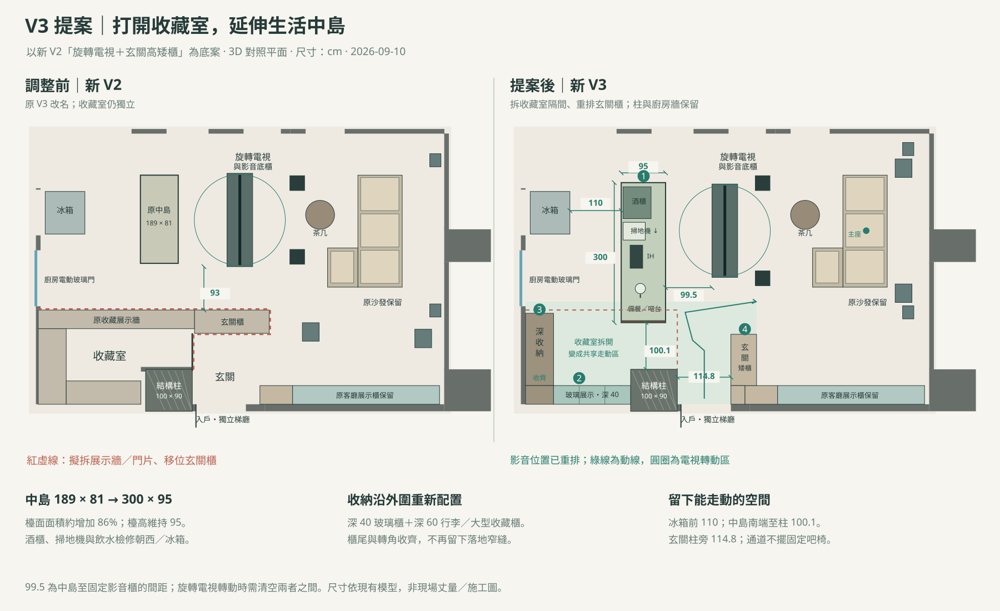

圓弧中島酒吧+玄關矮櫃
原 V2；保留曲線中島與独立收藏室。
開啟 V1 3D ↗保留 V1、V2；V3 將收藏室打開成共享大中島區。下列比較使用目前模型，尺寸單位 cm；不同位置的通道數值並非同一條測線。
原 V2；保留曲線中島與独立收藏室。
開啟 V1 3D ↗原 V3；保留直線中島與高矮玄關櫃。
開啟 V2 3D ↗300×95長中島；拆收藏室、重排收納、喇叭及入口。
開啟 V3 3D ↗| 項目 | V1 | V2 | V3 |
|---|---|---|---|
| 中島外包絡／高度 | 260×160.2／H95（圓弧） | 189×81／H95 | 300×95／H95 |
| 中島水槽 | 22cm飲水接水槽 | 22cm飲水接水槽 | 55×45cm備餐單槽；內槽50×40、深20 |
| 玄關 | 90cm矮櫃 | 高矮櫃 | 90cm矮櫃＋側板掛衣 |
| 收藏與展示 | 獨立收藏室 | 獨立收藏室 | 開放展示165×40＋深收納155×60 |
| 電視 | 固定朝沙發 | 180°旋轉 | 180°旋轉，對齊沙發主座 |
| 主要南側淨距 | 中島至展示櫃94.7 | 影音區通道93 | 主喇叭至玄關櫃104.2 |
| 影音器材 | G6／Q7×2／Q6／雙重低音／Denon／PS5 Pro／Switch 2 | 相同器材、旋轉TV配置 | 相同器材，重新配置聲道 |
| 廚房與中島设备 | 冰箱、酒櫃、掃地機、IH、飲水、洗碗機、烤箱、烘碗機 | 相同，設備開口朝冰箱 | 相同，四個獨立西向分艙 |
| 室內步行與3D移動 | ✓ | ✓ | ✓ |
| 電動廚房門、房門／櫃門互動 | ✓ | ✓ | ✓（取消舊收藏室門，新增展示門） |
| RGB、日夜、亮度、窗簾 | ✓ | ✓ | ✓ |
| 吊隱冷氣出回風與檢修孔 | ✓ | ✓ | ✓ |
| 家具清單、預算、備註與檔案儲存 | 共用81品項 | 共用81品項 | 共用81品項＋V3配置備註 |
| 平面原圖對位、PNG／SVG匯出 | ✓ | ✓ | ✓ |
| AI材質參考 | 更新前參考 | 更新前參考 | 僅保留未改房間；公共區回到即時3D |

V3增加公共空間，獨立收藏室的收納量、防塵與獨立除濕條件會改變。電視轉向中島時，聲場仍以沙發為主。3D是可操作設計模型；施工尺寸、設備散熱、承重與機電仍需正式設計核定。